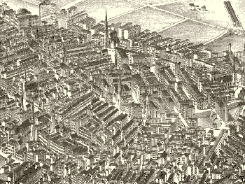

|
Tour our Home
So, we live in Boston. Beantown. The birthplace of the nation.
Okay, so that's supposed to be Philly, but you all know the deal.
Since moving here in the fall of 1999, Lockie and I have learned a lot about our new home town.
We both lived near here in our past (I, in Rowley and then Haverhill - Lockie, in Hanover),
but not only have we changed since then, Boston has as well. In spades.
To re-acclimate ourselves, Lockie did some research on the subject. We've discovered many things
perhaps, the most important are the driving rules. It ain't exactly a congeniality
contest on the roads up here.
Another unique fact of living in Boston (the Hub) is the weather.
We have had occasion to experience many odd weather patterns. "It's New England, if you don't like the weather,
wait five minutes." We were hailed upon in July at an outdoor Boston Pops concert, soaring temps in the 90's this
year broke records in the spring. A record low was set just three days later. And of course, there is always one
last snowfall in May. We made a beeline to the L.L.Bean factory warehouse
to stock up on winter gear.
|

Boston's South End 1880
map from Library of Congress American Memory collection
We live in a turn-of-the-century brownstone in Boston's historic South End.
The South End contains the largest number of Victorian bow-front row houses in the United States.
(To see an architectural diagram of a typical brown stone, click here.)
It is a neighborhood of marked cultural diversity. It is also noted for it's art community, stunning architecture, and great restaurants.
Here's some links:
www.bigdig.com
www.boston-online.com/wickedv.html
|
{kind=link}